A database has two jobs: keep what you give it, and find it again when you ask. This chapter opens the lid. It starts with the world's simplest database (two Bash functions that append to a file) and keeps fixing its weak spots: a hash index for fast lookups, segments and compaction so the file stops growing, sorted files (SSTables) and memtables that become the LSM-tree, and then the other big family, the B-tree, which overwrites fixed-size pages in place. Then it changes direction: analytics queries scan millions of rows instead of fetching a few by key, so data warehouses store data by column, compress it with bitmaps and run-length encoding, sort it cleverly, and pre-compute totals in data cubes. Every sim on this page is a toy you can click; numbers marked "modelled" are mine, not the book's.
Kleppmann tells one story: each idea fixes the weakness of the one before it, until the workload itself changes and a different kind of storage wins.
"Wer Ordnung hält, ist nur zu faul zum Suchen." (If you keep things tidily ordered, you're just too lazy to go searching.)
At the most basic level a database does two things: when you give it data, it stores it; when you ask later, it gives it back.
Chapter 2 looked at this from your side: the data model (the shape you hand data over in) and the query language (how you ask for it back). This chapter looks from the database's side: how does it store what it gets, and how does it find it again?
Why bother? You will probably never write a storage engine yourself. But you do have to pick one from the many on offer, and to tune it for your workload you need a rough picture of what it does under the hood.
One distinction matters most: engines tuned for transactional workloads are very different from engines tuned for analytics. The chapter gets there later (plate 20, "Transaction Processing or Analytics?", and plate 24, "Column-oriented storage").
It starts with the engines inside the databases you probably know: traditional relational databases and most so-called NoSQL databases. Two families are covered: log-structured storage engines and page-oriented storage engines such as B-trees.
The proverb is the whole chapter in one line. A kirana shop owner who keeps every item in a neat sorted shelf spends time tidying (slow writes) but finds things instantly (fast reads). A shop where new stock is just dumped at the front is fast to restock but slow to search. Every storage engine picks a spot between these two shops. Where the analogy breaks: a database can do the tidying later in the background (plate 5), which a shopkeeper with one pair of hands can't.
Writing and finding pull in opposite directions. Any structure that makes finding faster (sorting, indexing) must be kept up to date on every write. The whole first half of the chapter is about different ways to pay that cost: now (B-tree), later in batches (LSM-tree), or only in RAM (hash index).
On a phone, swipe the diagram sideways. Press Next ▶. Top row: a log-structured engine only adds to the end. Bottom row: a page-oriented engine (B-tree) finds the right page and overwrites it. My illustration (modelled), not a book figure.
Kleppmann's starting point is a whole key-value store in two shell functions:
#!/bin/bash
db_set () {
echo "$1,$2" >> database
}
db_get () {
grep "^$1," database | sed -e "s/^$1,//" | tail -n 1
}db_set key value stores a key and a value. Both can be (almost) anything, for example a JSON document as the value.db_get key returns the most recent value stored for that key.$ db_set 123456 '{"name":"London","attractions":["Big Ben","London Eye"]}'
$ db_set 42 '{"name":"San Francisco","attractions":["Golden Gate Bridge"]}'
$ db_get 42
{"name":"San Francisco","attractions":["Golden Gate Bridge"]}The storage format is a plain text file, one key,value pair per line (roughly CSV, ignoring escaping problems). Every db_set adds to the end of the file. Updating a key does not overwrite the old line; the old versions stay. So to find the current value you need the last line with that key, which is why db_get ends with tail -n 1.
$ db_set 42 '{"name":"San Francisco","attractions":["Exploratorium"]}'
$ db_get 42
{"name":"San Francisco","attractions":["Exploratorium"]}
$ cat database
123456,{"name":"London","attractions":["Big Ben","London Eye"]}
42,{"name":"San Francisco","attractions":["Golden Gate Bridge"]}
42,{"name":"San Francisco","attractions":["Exploratorium"]}Writes are good. Appending to a file is about the cheapest thing a disk can do. Many real databases use a log internally: an append-only data file, very like db_set. Real ones must also handle concurrency control, reclaiming disk space so the log doesn't grow forever, errors, half-written records and more, but the core idea is the same. Logs come back many times in the book.
Footnote i: here "log" doesn't mean application logs (human-readable text about what a program is doing). It means any append-only sequence of records. It may be binary and meant only for programs to read.
Reads are terrible. With many records, db_get scans the whole file from start to end every time. That's O(n): double the records and each lookup takes twice as long.
A railway clerk's register where every booking change is written on a new line at the bottom. Writing is instant: open to the last page, write. But to answer "what's the current seat for PNR 42?", the clerk reads the whole register, because the latest line for 42 could be anywhere. Where it breaks: a real clerk would remember recent bookings; this function remembers nothing between calls.
grep reads every byte of the file and keeps matching lines; sed strips the key; tail -n 1 keeps the last match. The file has no order other than "time of write", so the computer can't skip anything. Turn on the hash index in the sim and the scan count drops to one seek: that's plate 4.
The book's three writes leave 3 lines. db_get 42 reads all 3 and returns the 3rd. With 1,000,000 lines, a get still reads all 1,000,000, even if the key was written a second ago. With 2,000,000 lines it reads 2,000,000: twice the work, which is what O(n) means.
To find a key's value quickly we need a different data structure: an index. The general idea behind every index in this chapter: keep some extra metadata on the side that acts as a signpost to the data you want. If you want to search the same data in several ways, you may need several indexes on different parts of it.
An index is derived from the primary data. Many databases let you add and drop indexes freely: the contents of the database don't change, only the speed of queries.
But keeping extra structures costs something, especially on writes. Nothing beats plain appending, because it's the simplest possible write. Any index usually slows writes, because the index must be updated every time data is written.
This is the key trade-off of storage systems: well-chosen indexes speed up reads, but every index slows down writes. That's why databases don't index everything by default. You (the developer or database administrator) choose indexes by hand, using what you know about the app's typical queries, to get the most benefit without more overhead than needed.
Model (mine, not the book's): a write = 1 unit for the append + 1 unit per index to update. A read that matches an index = 1 unit; one that doesn't = 100 units (a scan). Adding an index helps reads only when queries use it, but every write pays for it.
A school register sorted by roll number, plus an extra sheet sorted by surname and another by house colour. Finding a student by surname is now fast. But every time a new student joins, the teacher must write them into the register and both extra sheets. Three sheets, three writes. Where it breaks: a database can update its index sheets in microseconds, but the principle (more sheets = more writing) is exactly the same.
An index is a second copy of some of the data, arranged for one way of searching. Each copy has to be kept in sync on every insert, update and delete. Read speed is bought with write work and disk space. That's why "add an index" is a design decision, not a default.
A users table with 1 million rows. With no index, WHERE email = 'a@b.in' must scan all 1,000,000 rows. Add an index on email and the same query reads a handful of index pages plus one row. Now add indexes on phone and city too: every new signup is 1 row write + 3 index updates = 4 writes instead of 1. If 99% of your traffic is signups and nobody searches by city, the city index is pure cost. That is why the book says to choose indexes from your real query patterns.
Start with indexes for key-value data. It isn't the only kind of data you can index, but it's very common and a building block for fancier indexes.
A key-value store is like the dictionary type in most programming languages, usually built as a hash map (hash table). (The book skips how hash maps work; any algorithms textbook covers it [1, 2].) We already use hash maps in memory, so why not use one to index data on disk?
Say our storage is just appending to a file, as before. The simplest indexing strategy: keep an in-memory hash map where every key maps to a byte offset in the data file, the position where its value starts.
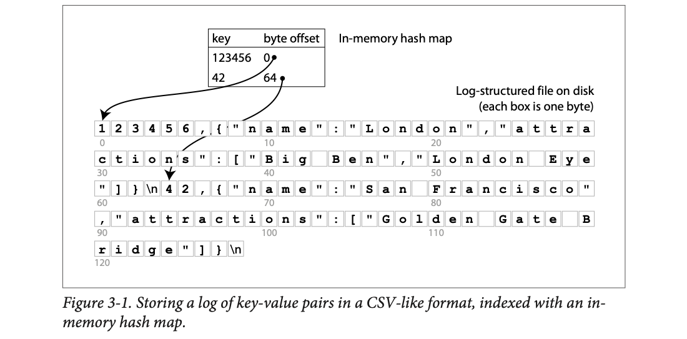
The bottom part is the file on disk, drawn one box per byte, with byte numbers 0, 10, 20 … under the rows. The London record starts at byte 0; after its newline (\n) the San Francisco record starts at byte 64. The small table at the top is the hash map in RAM: 123456 → 0, 42 → 64. The arrows show the point: to read key 42 you don't scan bytes 0–63, you jump straight to byte 64.
Simple, but it really works. It's essentially what Bitcask does, the default storage engine in Riak [3]. Bitcask gives fast reads and writes, as long as all the keys fit in RAM, because the hash map lives entirely in memory. The values can be bigger than memory: one disk seek loads any value. If that part of the file is already in the filesystem cache, a read needs no disk I/O at all.
Bitcask suits workloads where each key's value is updated very often. Book example: the key is the URL of a cat video, the value is its play count, incremented every time someone presses play. Lots of writes, but not too many distinct keys (so all keys fit in memory): a large number of writes per key.
Use the sim in plate 2 with the hash-index box ticked: each db_get becomes one seek instead of a full scan, and the hash map updates on every db_set.
A dabbawala's sorting sheet. The tiffins sit on a long rack in the order they arrived (the log). The sheet says "office 42 → slot 64". To deliver office 42's tiffin, you read the sheet and walk straight to slot 64. When office 42 sends a new tiffin, it goes at the end of the rack and the sheet is corrected to the new slot. Where it breaks: the sheet must fit in the sorter's head (RAM). If there are millions of offices, it won't.
A hash map gives O(1) average lookup in memory. The disk is touched at most once per read (one seek to the offset) and once per write (a sequential append). The price is RAM: one entry per distinct key. That's why the workload has to be "many writes, few distinct keys".
10 million cat-video URLs, each around 60 bytes, plus an 8-byte offset and some hash-table overhead: roughly 1 GB of RAM for the map. Values (play counts) are tiny, but even if they were 10 KB JSON blobs (100 GB on disk), each read is still one seek. At 100 million distinct keys you'd need ~10 GB of RAM, and the design starts to hurt.
On a phone, swipe the diagram sideways. Press Next ▶ to build the file and the hash map of Figure 3-1 step by step. Byte offsets 0 and 64 are the book's. The update in steps 5–6 is my own example; its offset (129) is just the two earlier record lengths added up.
If we only ever append, the disk will eventually fill up. The fix: break the log into segments of a certain size (close a segment file when it reaches the size, start writing a new one), and run compaction on them. Compaction means throwing away duplicate keys and keeping only the most recent update for each key.
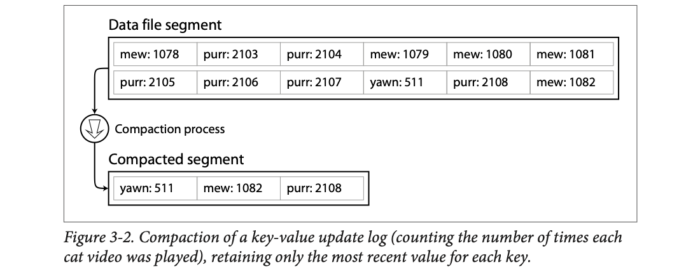
The top box is one segment, read left to right, top row then bottom row: twelve writes for three cat videos (mew, purr, yawn). mew is written five times (1078 … 1082), purr six times (2103 … 2108), yawn once (511). Compaction keeps only the last value of each key: yawn: 511, mew: 1082, purr: 2108. Twelve records shrink to three.
Compaction usually makes segments much smaller (if keys are overwritten several times per segment on average). So we can merge several segments together while compacting them.
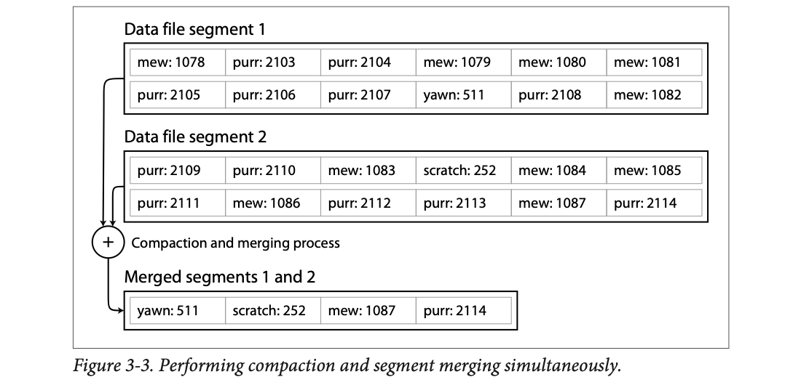
Segment 1 is the same as in Figure 3-2. Segment 2 is newer and continues the counters (purr 2109 … 2114, mew 1083 … 1087) and adds a new key scratch: 252. The "+" means: read both, keep the newest value per key, write one new file. Result: yawn: 511 (only in segment 1, kept), scratch: 252, mew: 1087, purr: 2114 (segment 2's values win because segment 2 is newer).
Important details:
Rules of the sim: a segment closes after 6 records (the book says "a certain size"; 6 is mine). Faded, struck-out records are stale (a newer value exists). Reads check the newest segment first.
A cricket scorer writing every run on a fresh line of a notebook page: "Kohli 12", "Kohli 13", "Kohli 17"… When a page fills, a new page starts. Every so often an assistant copies the old pages into a clean summary page with only the latest score per batsman, then tears out the old pages. The scorer never stops writing while this happens. Where it breaks: a real scoreboard overwrites the number; the log never does, it only cleans up later.
Because old segments never change, the background merger can read them without locks while the writer appends to the newest segment. The switch from old files to the merged file is one quick step (swap which files the reader uses), so readers never see a half-merged state.
Figure 3-3: segments 1 and 2 hold 12 + 12 = 24 records. The merged segment holds 4. That's 83% of the disk space reclaimed, and a lookup for mew now checks one hash map instead of two.
Lots of detail goes into making this work in practice. The book briefly names five issues:
| Issue | Problem | Solution in the book |
|---|---|---|
| File format | CSV isn't the best format for a log (escaping commas and newlines is messy and slow). | A binary format: first write the string's length in bytes, then the raw bytes. No escaping needed. |
| Deleting records | You can't erase from an append-only file. | Append a special deletion record, a tombstone. When segments are merged, the tombstone tells the merger to discard all earlier values of that key. |
| Crash recovery | On restart, the in-memory hash maps are gone. You could rebuild each one by reading its whole segment start to end, noting the latest offset per key, but that's slow for big segments and makes restarts painful. | Bitcask stores a snapshot of each segment's hash map on disk, which loads into memory much faster. |
| Partially written records | The database can crash halfway through appending a record. | Bitcask files include checksums, so corrupted parts of the log are detected and ignored. |
| Concurrency control | Many threads want to read and write. | Writes go to the log in strict order, so a common choice is only one writer thread. Segments are append-only and otherwise immutable, so many threads can read them at once. |
A tombstone is a "cancelled" stamp in a railway register: you can't tear out the old booking line, so you add a new line "PNR 42: CANCELLED". When the register is recopied, both lines are dropped. A checksum is like the total at the bottom of a handwritten bill: if the numbers above don't add up to it, you know the page was torn mid-writing. Where it breaks: the register clerk can see the tear; a computer only knows by recomputing the checksum.
A length prefix tells the reader exactly where a record ends, so no special characters need escaping. A checksum (a small number computed from the record's bytes) is stored with each record; on recovery the reader recomputes it, and a mismatch means "this record was cut off, stop here". The single-writer rule works because appends must happen in order anyway; parallel writers would only fight over the end of the file.
Deleting with a tombstone. Segment 1 holds yawn: 511. You delete yawn, so segment 2 gets yawn: TOMBSTONE. A read for yawn checks segment 2 first, sees the tombstone, and answers "not found" without looking further. When segments 1 and 2 are merged, the merger sees the tombstone is the newest entry for yawn and drops both lines, so yawn takes no space at all. (The sim in plate 5 has a "delete yawn" button that does exactly this.)
Recovery speed (modelled). A 1 GB segment scanned at 200 MB/s takes about 5 s to rebuild its hash map; 50 such segments take over 4 minutes. Loading a 10 MB hash-map snapshot per segment instead takes a fraction of a second each. That is why Bitcask saves snapshots.
An append-only log looks wasteful. Why not just overwrite the old value in place? Because append-only is better for three reasons:
But the hash table index has two limits:
kitty00000 and kitty99999; you'd have to look up every key one by one.The next section's structure has neither limit.
40 keys, modelled. Highlighted = keys the engine had to touch.
A hash map is like a cloakroom: you hand over coat 42 and get token 42; the attendant can fetch coat 42 instantly. But ask "give me all coats with tokens between 20 and 45" and they must look up 26 tokens separately, because coats are hung by hash, not by number. A sorted list is a library shelf: walk to the first book in the range and keep picking until you pass the end. Where it breaks: the cloakroom attendant may hang coats in numeric order by habit; a real hash function deliberately scatters neighbours.
A hash function is designed to scatter similar keys to unrelated buckets (that's what keeps the buckets balanced). The same scattering destroys any order, so "between A and B" has no shortcut. On a spinning disk, a random write means moving the head and waiting for the platter; a sequential write just keeps streaming. That's the physical reason appends win.
The book's range kitty00000 to kitty99999 covers up to 100,000 keys. With a hash index you must make 100,000 separate hash lookups (one per possible key, even ones that don't exist), each possibly a separate disk seek. With a file sorted by key you seek once to kitty00000 and read forward until you pass kitty99999: one seek plus one sequential read. Try it in the sim above with a wide range.
In Figure 3-3 each segment is a list of key-value pairs in the order they were written. Later values for a key beat earlier ones; apart from that, order doesn't matter.
Now one simple change: require each segment's pairs to be sorted by key. (At first this seems to break our fast sequential writes. Plate 9 shows how it doesn't.) This format is called a Sorted String Table, or SSTable. We also require each key to appear only once per merged segment (merging already guarantees that).
SSTables have three big advantages over hash-indexed log segments:
It works like mergesort: open all input files side by side, look at the first key of each, copy the lowest key to the output, advance that file, repeat. The output is a new merged segment, also sorted.
What if the same key is in several inputs? Each segment holds all writes from one period of time, so all values in one segment are newer than all values in an older one (assuming you always merge adjacent segments). So keep the value from the most recent segment and drop the rest.
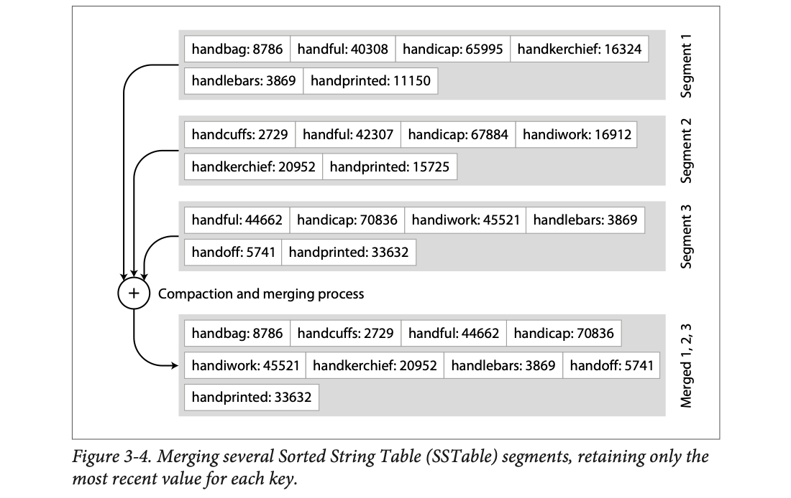
Three segments, each already sorted (segment 1 oldest, segment 3 newest). Keys like handful appear in all three (40308, 42307, 44662); the merged output keeps 44662 from segment 3. handbag: 8786 exists only in segment 1, so it survives as is. handcuffs only in segment 2, handoff only in segment 3. The output (bottom) is still in alphabetical order and has each key once.
You no longer need every key in memory. Say you're looking for handiwork and don't know its offset. You do know the offsets of handbag and handsome, and since the file is sorted, handiwork must be between them. Jump to handbag's offset and scan forward until you find it (or pass where it would be, meaning it's absent).
You still need an in-memory index for some keys, but it can be sparse: one key for every few kilobytes of file is enough, because a few kilobytes scan very quickly.
Footnote ii: if all keys and values had a fixed size, you could binary-search the segment file and skip the in-memory index entirely. In practice they're variable-length, so without an index you can't tell where one record ends and the next begins.
A read has to scan several key-value pairs in the range anyway, so you can group those records into a block and compress it before writing to disk (the shaded area in Figure 3-5). Each sparse-index entry then points to the start of a compressed block. Today disk bandwidth is usually a worse bottleneck than CPU, so spending some CPU to read and write less data is worth it.
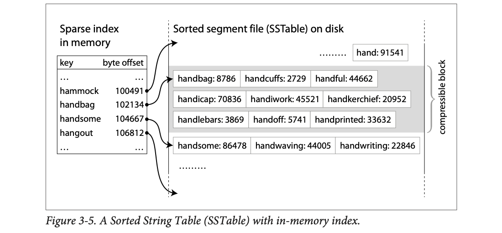
Left: the sparse index in memory. It only knows four keys and their byte offsets (hammock 100491, handbag 102134, handsome 104667, hangout 106812). Right: the sorted file on disk. The arrow from handbag lands at the start of the grey block (handbag … handprinted); that block is one compressible unit. The arrow from handsome lands at the next block. To find handiwork (alphabetically between handbag and handsome), read and decompress the grey block and scan it.
An English dictionary. You don't have an index of every word; the guide words at the top of each page ("handbag … handsome") are the sparse index. Open the right page, scan a few lines. Merging SSTables is like a teacher combining three class lists that are each alphabetical into one alphabetical list: just keep picking the smallest name off the top of the three piles. Where it breaks: a printed dictionary is never merged with a newer edition while you read it; an SSTable is, all the time.
Merging needs only one "current" record per input file in memory, so even 100 GB files merge with a few kilobytes of RAM, reading and writing strictly sequentially. Sorting is what lets the index be sparse: the order itself tells you where a key would be, so you only need landmarks. Similar keys sit next to each other, which also makes blocks compress well.
A 1 GB SSTable with 100-byte records and one sparse-index entry per 4 KB block: 262,144 index entries instead of 10 million. At ~30 bytes each, that's ~8 MB of RAM instead of ~300 MB. Each lookup reads one 4 KB block and scans about 40 records.
How do we get data sorted by key when writes arrive in any order? Keeping a sorted structure on disk is possible (that's the B-tree, plate 11), but keeping one in memory is much easier. Many well-known tree structures do it, such as Red-Black trees or AVL trees [2]: insert keys in any order, read them back sorted.
So the storage engine works like this:
One problem: if the database crashes, the newest writes (in the memtable, not yet on disk) are lost. The fix: keep a separate log on disk that every write is appended to immediately, just like in plate 4. That log isn't sorted, and doesn't need to be: its only job is to rebuild the memtable after a crash. Each time the memtable is written out as an SSTable, its log can be thrown away.
Threshold: the memtable flushes at 4 keys (real engines: a few MB). Untick the WAL and crash to see writes vanish. Disk reads are counted per segment checked.
A chai stall owner takes orders on a small whiteboard, kept sorted by table number (the memtable). Each order is also scribbled into a pocket diary as it comes, in no order (the WAL), in case the whiteboard gets wiped. When the whiteboard fills, he copies it neatly into a ledger page (an SSTable), wipes the board and tears out the diary page. At month-end, ledger pages are merged into one clean summary. Where it breaks: a real ledger is never read in "newest page first" order; an LSM read must check newest first so the latest value wins.
The random-order part of the work (sorting) happens in RAM, where random access is cheap. The disk only ever sees two kinds of writes: appends to the WAL and whole sorted files streamed out at once. Both are sequential, which is why the design keeps disk writes fast even though the data ends up sorted.
Writes arrive in this order: zebra=1, apple=2, mango=3, apple=4.
apple=9 goes into a fresh memtable. get apple finds 9 in the memtable and never touches SSTable #1. get mango misses the memtable and finds 3 in SSTable #1.apple=9: the new memtable is lost, but the new WAL still has apple=9, so replaying it rebuilds the memtable.This algorithm is essentially what LevelDB [6] and RocksDB [7] use: key-value storage engine libraries meant to be embedded inside other applications. LevelDB can be used in Riak instead of Bitcask. Similar engines are inside Cassandra and HBase [8], both inspired by Google's Bigtable paper [9], which introduced the terms SSTable and memtable.
The structure was first described by Patrick O'Neil et al. as the Log-Structured Merge-Tree (LSM-Tree) [10], building on earlier work on log-structured file systems [11]. That's where the name "LSM-tree" for this whole memtable + SSTables + merging design comes from.
Lucene, the indexing engine used by Elasticsearch and Solr, stores its term dictionary in a similar way [12, 13]. A full-text index is much more complex than a key-value index, but at its core: given a word in a search query, find all documents (web pages, product descriptions …) that mention it. That's a key-value structure: the key is a word (a term), the value is the list of IDs of documents that contain it (the postings list). Lucene keeps this term → postings mapping in SSTable-like sorted files, merged in the background as needed [14].
A lot of detail goes into making this fast in practice. One example: an LSM-tree is slow for keys that don't exist. You check the memtable, then every segment back to the oldest (maybe a disk read for each) before you know the key isn't there. To avoid this, LevelDB keeps extra Bloom filters [15]. A Bloom filter is a memory-efficient structure that approximates the contents of a set. It can tell you a key is definitely not in the database, which saves many useless disk reads.
The hash functions and sizes are mine (modelled). Real filters use thousands of bits per segment, so false "maybe" answers are rare.
Still, the basic idea (a cascade of SSTables merged in the background) is simple and effective. It keeps working when the dataset is much bigger than memory. Data is sorted, so range queries (all keys from some minimum to some maximum) are efficient. And because disk writes are sequential, an LSM-tree supports remarkably high write throughput.
A Bloom filter is a watchman at a housing society gate with a sheet of tick boxes. For each resident's name he ticks 3 boxes chosen by a fixed rule. When a visitor asks for "Mr Sharma", he checks Sharma's 3 boxes. If any box is blank, Sharma definitely doesn't live here: no need to walk the building. If all are ticked, Sharma probably lives here (other names might have ticked the same boxes), so he goes and checks. Where it breaks: the watchman can't un-tick a box when someone moves out; basic Bloom filters can't delete either.
Adding a key sets k bits chosen by k hash functions. Testing a key checks those k bits. A zero means it was never added (no false negatives). All ones can happen by chance from other keys (false positives). One filter per SSTable, kept in memory, lets a read skip any segment whose filter says "no".
Newer editions and engines go further: RocksDB and Cassandra let you choose compaction strategies (size-tiered vs leveled), and Lucene's segment merging is visible in Elasticsearch's merge settings. This early-release chapter doesn't cover those strategies.
An LSM-tree has 10 SSTables on disk and you look up a key that doesn't exist. Without Bloom filters: check the memtable, then all 10 SSTables, up to 10 disk reads, just to say "not found". With one Bloom filter per SSTable that has a 1% false-positive rate: each filter is checked in RAM, and on average only 10 × 1% = 0.1 SSTables wrongly say "maybe", so you do about 0.1 disk reads instead of 10. For keys that do exist, the filter answers "maybe" for the right SSTable, so you lose nothing.
Log-structured indexes are gaining acceptance, but they aren't the most common index. That title goes to a very different structure: the B-tree.
B-trees were introduced in 1970 [16] and called "ubiquitous" less than ten years later [17]. They've aged very well: they're still the standard index in almost all relational databases, and many non-relational databases use them too.
Like SSTables, B-trees keep key-value pairs sorted by key, so key lookups and range queries are efficient. That's where the similarity ends; the design philosophy is very different:
| Log-structured (SSTables) | B-tree | |
|---|---|---|
| Unit of storage | variable-size segments, typically several MB or more | fixed-size blocks or pages, traditionally 4 kB |
| How it writes | always writes a whole segment sequentially | reads or writes one page at a time |
| Fit to hardware | large streams | closer to the hardware: disks are also arranged in fixed-size blocks |
Each page has an address (location), so one page can refer to another, like a pointer but on disk. These references build a tree of pages.
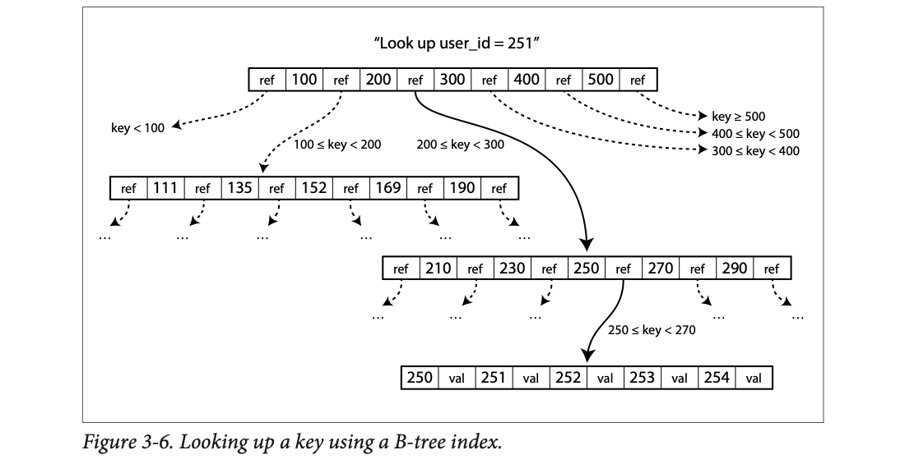
The top row is the root page: keys 100, 200, 300, 400, 500 with a "ref" (child pointer) between and around them. Each ref covers a range: left of 100 → keys < 100; between 200 and 300 → 200 ≤ key < 300; right of 500 → key ≥ 500. We want 251, so we follow the solid arrow (200–300) to a page with 210, 230, 250, 270, 290. 251 is between 250 and 270, so we follow that ref to a leaf page holding 250, 251, 252, 253, 254 with their values. Three pages read, done. Dotted arrows are the paths we didn't take.
Updating an existing key: find its leaf page, change the value in that page, write the page back to disk. Any references to the page stay valid.
Adding a new key: find the page whose range covers it and add it there. If the page has no free space, split it into two half-full pages, and update the parent so it knows about the new split in key ranges.
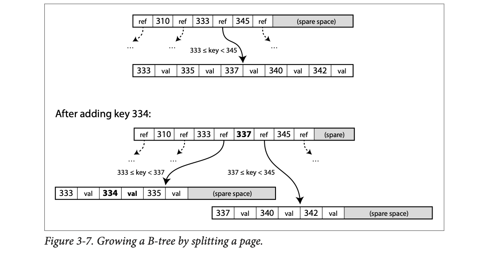
Top: the parent has keys 310, 333, 345 and some spare space. The child for 333 ≤ key < 345 is a full leaf: 333, 335, 337, 340, 342. Bottom: after adding 334 there's no room, so the leaf splits. Left half: 333, 334, 335 (plus spare space). Right half: 337, 340, 342 (plus spare). The parent gets a new boundary key 337 and a new ref, so its ranges become 333 ≤ key < 337 and 337 ≤ key < 345. The parent used some of its own spare space for this.
This algorithm keeps the tree balanced: a B-tree with n keys always has a height of O(log n). Even a huge tree needs only a few page hops to find any key. (If you know Red-Black trees or 2-3 trees, B-trees are very similar, just with a much bigger branching factor.)
Footnote iii: inserting is fairly intuitive; deleting a key while keeping the tree balanced is more involved [2].
Toy size: a page holds at most 4 keys (so 5 children). Real pages hold hundreds. Orange border = pages read on the last operation; green = pages written.
Indian Railways' PNR enquiry by zone. The root page says "PNR < 2xxxxx → Northern zone; 2xxxxx–4xxxxx → Western …". The zone desk says "250000–270000 → counter 3". Counter 3 has the actual booking. Three hops, even for a billion PNRs, because each level fans out hundreds of ways. A split is a counter getting too crowded: half its files move to a new counter, and the zone desk adds one line to its signboard. Where it breaks: real counters don't have a fixed size; B-tree pages do (4 kB), and that fixed size is the whole point.
Height grows with logb(n), where b is the branching factor. With b in the hundreds, each extra level multiplies capacity by hundreds. Splits only ever push one key up to the parent; the tree grows taller only when the root itself splits, which is why all leaves stay at the same depth (balanced).
Figure 3-7: inserting 334 into a full page writes three pages: the left half, the new right half, and the parent with key 337 added. (Plate 12: that "three pages" is exactly what makes crashes dangerous.) In the height calculator, 10⁹ keys with branching factor 500 need only 4 levels (500⁴ = 6.25 × 10¹⁰ ≥ 10⁹).
A B-tree's basic write is to overwrite a page on disk with new data, assuming the page doesn't move, so all references to it stay valid. That's the opposite of log-structured indexes like LSM-trees, which only append to files (and eventually delete old ones) but never modify a file in place.
Think of overwriting as a real hardware action. On a magnetic hard drive: move the disk head to the right track, wait for the right spot on the spinning platter to come round, then overwrite that sector. On SSDs it's more complicated, but similarly slow [18].
Some operations overwrite several pages. A split writes the two halves and overwrites the parent to update its references. That's dangerous: if the database crashes after writing only some of them, the index is corrupted. For example you might get an orphan page that is nobody's child.
To survive crashes, B-trees normally keep one more structure on disk: a write-ahead log (WAL), also called a redo log. It's an append-only file. Every B-tree change must be written to it before it's applied to the tree's pages. After a crash, the log is used to bring the B-tree back to a consistent state [5, 19].
So a B-tree writes every piece of data at least twice: once to the log, once to the page (and maybe again when pages split). But log-structured indexes also rewrite data several times, through repeated background merging. It's not clear which is better here; it depends on the workload and the engine's tuning. In the end you have to benchmark with your own workload.
Footnote iv: this effect, one write to the database causing several writes to disk, is called write amplification. It especially matters on SSDs, which can only overwrite each block a limited number of times before wearing out.
Another complication of in-place updates: if several threads use the B-tree at once, you need careful concurrency control, or a thread might see the tree half-changed. This is usually done with latches (lightweight locks) on the tree's data structures. Log-structured designs are simpler here: they merge in the background without touching incoming queries, and every so often atomically swap old segments for new ones.
A bank cashier updating three passbooks for one transfer. If the power cuts after updating two, the books disagree. So the cashier first writes the whole transfer in a day-book (the WAL). After the outage, she reads the day-book and finishes any half-done entries. A latch is the "counter closed" sign she flips while rewriting a passbook so no one reads it mid-correction. Where it breaks: the cashier can see which passbook is half-written; the database can only find out by replaying the log.
"Write-ahead" means the log record reaches disk before the page change does. On restart the database replays log records from the last checkpoint, so any change that was logged is completed, and the tree's pages end up consistent with each other. The log is appended sequentially, so it's cheap; the expensive random page writes can happen later.
B-tree: inserting key 334 in Figure 3-7 (say a 16-byte key + value). The engine first appends a WAL record, then writes three whole 4 kB pages (left half, right half, parent). About 12 kB written to disk for 16 bytes of new data: that is write amplification. An ordinary insert with no split still writes one WAL record plus one whole 4 kB page.
LSM-tree: the same record is written once to the WAL, once when the memtable is flushed, and once more each time a merge rewrites the segment it lives in (say 4 merges over its life): about 6 writes of the record. Which is worse depends on record size, merge policy and workload, which is exactly the book's point: benchmark your own case.
B-trees have been around a long time, so many optimizations exist. The book mentions five:
Copy-on-write is like correcting an Aadhaar address: the old card isn't erased; a new card is issued and the database points to it, while anyone holding the old card still sees the old address. Abbreviated keys are like a phone-book page header saying "Ha–He" instead of "Hariharan Krishnamurthy – Hemant Venkataraman". Where it breaks: an old Aadhaar card eventually stops being valid; old B-tree pages are freed only when no reader uses them.
Every optimization attacks one cost: copy-on-write removes the need for a separate redo log and gives readers a stable snapshot; abbreviated keys raise the branching factor (fewer levels, fewer seeks); sequential layout and sibling pointers make range scans read nearby pages instead of jumping around.
Abbreviated keys. In an interior page, the boundary between handkerchief and handlebars only needs to be handl: anything smaller goes left, anything ≥ handl goes right. If full keys average 40 bytes, a 4 kB page holds about 100 of them; at 10 bytes each it holds about 400. For 1 billion keys, height ≈ log100(10⁹) ≈ 4.5, so 5 levels, versus log400(10⁹) ≈ 3.5, so 4 levels: one fewer disk read per lookup.
Sibling pointers. A range scan of keys 20…80 over leaves [10 20 30] → [40 50 60] → [70 80 90] reads 3 leaves in a row via sibling links, instead of climbing back to the parent between leaves.
On a phone, swipe the diagram sideways. Press Next ▶. A reader starts on the old tree, then a writer changes leaf B. Nothing is overwritten. My illustration of the LMDB-style idea the book describes; page names are made up.
B-tree implementations are generally more mature; LSM-trees are very promising because of their performance characteristics.
| Point from the book | LSM-tree | B-tree |
|---|---|---|
| Random-write throughput | much higher: turns all random writes into sequential writes on the device | lower: overwrites pages in place (+ WAL) |
| Rule of thumb [22] | faster for writes | thought to be faster for reads |
| Benchmarks | often inconclusive and sensitive to the workload's details [23] | |
| Background work | compaction can interfere with ongoing reads and writes; disks have limited resources, so a request may wait while an expensive compaction finishes | no big background rewrite |
| Response time | average impact small, but at high percentiles response times can sometimes be quite high | more predictable [24] |
| Copies of a key | may exist in several segments | exactly one place in the index |
| Transactions | harder to attach range locks | range locks can be attached directly to the tree [5] |
That last row matters: many relational databases implement transaction isolation with locks on ranges of keys; in a B-tree these locks can sit right on the tree. Ch.7 covers this in detail.
B-trees are deeply built into database architecture and give consistently good performance for many workloads, so they won't go away soon. In new datastores, log-structured indexes are increasingly popular. There's no quick rule for which is better for you; test empirically.
A cartoon of the book's qualitative claims, not a benchmark: LSM write = 1 unit, LSM read = 2 units (several segments); B-tree write = 3 units (WAL + random page), read = 1 unit. Compaction pressure inflates only LSM's p99. The book's real advice: benchmark your own workload.
LSM is a busy restaurant that piles dirty plates in a tub and washes them all at closing (fast service, but if washing runs late, the next order waits). B-tree is a restaurant that washes each plate immediately (every order a bit slower, but never a sudden stall). Where it breaks: a restaurant can hire another dishwasher; a disk's bandwidth is fixed.
Disk bandwidth is shared. When compaction streams gigabytes in the background, a foreground read that needs the disk queues behind it. Averages hide this because most requests don't collide, but the unlucky 1% do, and that shows up at p99/p999.
Sensor/metrics ingestion: 200,000 small writes per second, reads mostly "last hour for one device". Random-write throughput dominates, so an LSM engine (Cassandra, RocksDB) fits; watch p99 latency during compaction. Bank account balances: modest write rate, many point reads, strict transactions with range locks. A B-tree engine (PostgreSQL, InnoDB) fits, with predictable latency. For anything in between, the book's advice holds: test with your real workload.
So far: key-value indexes, which are like a primary key index in the relational model. A primary key uniquely identifies one row in a relational table, one document in a document database, or one vertex in a graph database. Other records refer to it by that key (or ID), and the index resolves those references.
Secondary indexes are also very common. In relational databases you can create several on one table with CREATE INDEX, and they're often crucial for efficient joins. For example, in Figure 2-1 of Ch.2 (the LinkedIn résumé tables) you'd probably have a secondary index on the user_id columns to find all rows belonging to one user in each table.
A secondary index is easy to build from a key-value index. The difference: keys aren't unique; many rows can share a key. Two ways to handle that:
Either way, both B-trees and log-structured indexes work as secondary indexes.
| key (city) | value |
|---|---|
| Bengaluru | [r2, r5, r9] |
| Chennai | [r1] |
| Pune | [r3, r4] |
| key |
|---|
| Bengaluru#r2 |
| Bengaluru#r5 |
| Bengaluru#r9 |
| Chennai#r1 |
| Pune#r3 |
| Pune#r4 |
Example data is mine (modelled). "All Bengaluru users" = one key lookup in way 1, or a range scan over keys starting with "Bengaluru#" in way 2.
The primary key is your Aadhaar number: one number, one person. A secondary index is the voter list sorted by street: many people per street. Either each street lists its residents (way 1), or each line is "street + house number" so every line is unique (way 2). Where it breaks: voter lists are printed once a year; database indexes update on every write.
Way 2 turns a non-unique index into a unique one, so the same B-tree/LSM code works unchanged, and all rows for one value sit together in sorted order. Way 1 keeps one entry per value but makes each value a growing list.
The LinkedIn résumé of Figure 2-1 in Ch.2: a users table (primary key user_id) and a positions table with many rows per user. To show Bill Gates's profile (user_id 251) you need all his positions. Without an index on positions.user_id you scan the whole positions table. With CREATE INDEX ON positions (user_id) the index key 251 is not unique (he has several positions), so the index stores either 251 → [row 1, row 2] (way 1) or keys 251#row1, 251#row2 (way 2).
On a phone, swipe the diagram sideways. Press Next ▶. Rows 458 and 457 are Bill Gates's positions from Figure 2-1 in Ch.2; the other rows are made up (modelled).
The key of an index is what queries search for. The value can be either the actual row (document, vertex), or a reference to the row stored somewhere else.
In the second case, rows live in a heap file: data in no particular order (it may be append-only, or it may track deleted rows to reuse their space later). The heap file approach is common because it avoids duplicating data when there are several secondary indexes: each index just points to a heap location, and the real data lives in one place.
Updating a value without changing the key can be efficient: overwrite the record in place, if the new value is not larger. If it's larger, it probably has to move somewhere with more space. Then either all indexes are updated to the new location, or a forwarding pointer is left at the old location [5].
Sometimes the extra hop from index to heap costs too much on reads, so the row is stored inside the index itself. That's a clustered index. In MySQL's InnoDB engine the primary key is always a clustered index, and secondary indexes refer to the primary key (not a heap location) [25]. In SQL Server you can choose one clustered index per table [26].
In between a clustered index (all row data in the index) and a nonclustered index (only references) sits a covering index, or index with included columns: it stores some of the table's columns in the index [27]. Some queries can then be answered from the index alone; the index is said to cover the query [26].
Like any duplication, clustered and covering indexes speed up reads but need extra storage and slow down writes. Databases also have to work harder to keep transactional guarantees, so apps don't see inconsistencies caused by the duplicates.
A library catalogue card says "shelf 7, slot 12" (nonclustered index → heap). A clustered index is a shelf where the books themselves are arranged in catalogue order, so finding the card means finding the book. A covering index is a catalogue card that already lists the author and year, so if that's all you wanted, you never walk to the shelf. A forwarding pointer is a note on slot 12 saying "moved to shelf 9". Where it breaks: libraries don't have five catalogues that must all be updated in the same instant.
Each hop from index to heap is potentially one more random page read. Clustered and covering indexes remove that hop by copying data into the index. Every copy is one more place to update on writes and one more thing that must stay consistent inside a transaction.
PostgreSQL tables are heap files; since version 11 it supports covering indexes with CREATE INDEX … INCLUDE (col), and "index-only scans" are its name for a covered query.
Row r7 sits in the heap file at offset 4096. Three secondary indexes (email, phone, city) each store "→ 4096". The user edits their bio and the row grows, so it no longer fits at 4096 and moves to offset 9000. Option A: update all three indexes to say 9000 (three extra writes now). Option B: leave a forwarding pointer at 4096 saying "moved to 9000" (no index writes now, but every later read through an index takes one extra hop). With a clustered index (InnoDB), secondary indexes store the primary key instead of an offset, so moving the row doesn't break them; the price is a second lookup in the primary-key tree.
So far each index maps one key to a value. That's not enough when you query several columns (or document fields) at the same time.
The most common multi-column index is a concatenated index: several fields joined into one key, one after the other (the index definition says the order). It's like an old paper phone book indexed by (lastname, firstname) → phone number. Because of the sort order you can find everyone with a given last name, or a given lastname + firstname. But it's useless for finding everyone with a given first name.
Names are mine (modelled). Try: last name only; last + first; first name only (clear the last name).
Multi-dimensional indexes are a more general way to query several columns at once. They matter especially for geospatial data. A restaurant-search site stores each restaurant's latitude and longitude. When a user looks at a map, the site needs all restaurants inside the visible rectangle, a two-dimensional range query:
SELECT * FROM restaurants WHERE latitude > 51.4946 AND latitude < 51.5079
AND longitude > -0.1162 AND longitude < -0.1004;A normal B-tree or LSM-tree can't do this efficiently. It can give you all restaurants in a latitude range (at any longitude), or in a longitude range (anywhere from north to south pole), but not both at once.
Multi-dimensional indexes aren't only for maps:
A concatenated index is a school register sorted by (class, roll number): "everyone in class 7B" is easy, "everyone with roll number 12 in any class" means reading the whole register. A 2D index is a city map divided into grid squares (like PIN code areas): to find restaurants in the box you're viewing, check only the squares that touch it. Where it breaks: PIN areas don't split when a neighbourhood gets crowded; R-trees adjust their boxes as data grows.
A sorted index orders keys along one line. A concatenated key sorts by the first column, then by the second within each first value, so only prefixes are searchable. A 2D query needs points that are close in both dimensions to be stored together; R-trees do this by grouping nearby points into bounding boxes, and boxes into bigger boxes.
Weather database: 1 million observations in 2013, of which 5% (50,000) were between 25 and 30 ℃. With a 1D index on date you read all 1,000,000 rows of 2013 and throw away 950,000. With a 1D index on temperature you read every 25–30 ℃ row from all years and throw away the non-2013 ones. A 2D index on (date, temperature) goes almost straight to the 50,000 rows you want. The map query in the book works the same way: latitude-only or longitude-only gives you a whole strip of the map; a 2D index gives you just the box.
Every index so far assumes exact data: query an exact key, or a range in sort order. They can't search for similar keys, like misspelled words. That kind of fuzzy querying needs different techniques.
One example: Lucene can search text for words within a certain edit distance (edit distance 1 = one letter added, removed or replaced) [31].
Recall that Lucene's term dictionary is SSTable-like, with a small in-memory index telling a query where in the sorted file to look. In LevelDB that in-memory index is a sparse set of keys. In Lucene, it's a finite state automaton over the characters of the keys, similar to a trie [32]. This automaton can be turned into a Levenshtein automaton, which efficiently finds words within a given edit distance [33].
Other fuzzy-search techniques lean towards document classification and machine learning; see an information retrieval textbook [34].
Typing "chiar" on your phone and getting "chair": the keyboard knows "chair" is one swap away. Edit distance counts the fewest single-letter fixes. A trie is like the index of a Hindi-English dictionary grouped by first letter, then second letter: words with the same beginning share the path. Where it breaks: a swap of two letters counts as 2 edits in plain Levenshtein distance, though humans see it as one typo.
Edit distance is computed with a small table (dynamic programming): each cell is the cheapest way to turn one prefix into the other. A Levenshtein automaton does the same check while walking the trie, so it can prune whole branches that are already too far away, instead of comparing the query to every word.
databse → database: one letter added, edit distance 1. teh → the: two letters replaced (e→h, h→e), distance 2. A Lucene query for databse with max distance 1 finds database but not databank (distance 3). Type these pairs into the sim above to check.
Everything so far works around the limits of disks. Compared to RAM, disks are awkward: on magnetic disks and SSDs alike, data must be laid out carefully for good read and write performance. We accept that because disks have two big advantages: they're durable (contents survive a power cut) and cheaper per gigabyte than RAM.
As RAM gets cheaper, the cost argument weakens. Many datasets simply aren't that big, so keeping them entirely in memory (maybe spread across several machines) is feasible. That led to in-memory databases.
On restart, an in-memory database reloads its state from disk or from a replica over the network (unless special hardware is used). Even though it writes to disk, it's still "in-memory": the disk is only an append-only log for durability, and reads are served entirely from memory. Writing to disk also helps operations: files can be backed up, inspected and analysed with external tools.
Counter-intuitive point: in-memory databases are not faster because they avoid reading from disk. A disk-based engine with enough RAM may never read from disk either, because the operating system caches recently used disk blocks in memory. They're faster because they avoid the overhead of encoding in-memory data structures into a form that can be written to disk [38].
Besides speed, in-memory databases can offer data models that are hard to build with disk-based indexes. Redis offers a database-like interface to data structures such as priority queues and sets. With everything in memory, its implementation stays fairly simple.
Recent research suggests in-memory architectures could support datasets larger than memory without bringing back disk-centric overheads [39]. The anti-caching approach evicts the least-recently-used data from memory to disk when memory is short, and loads it back when it's accessed again. That's like the OS's virtual memory and swap files, but the database can manage memory more efficiently because it works with individual records instead of whole memory pages. It still needs all indexes to fit in memory (like Bitcask at the start of the chapter).
In-memory databases were still fairly new when the book was written, but worth watching.
A shopkeeper who keeps the day's prices in his head (in-memory) vs one who looks them up in a ledger every time, even though the ledger is open on the counter (disk-based engine with a warm cache). The second isn't slow because the ledger is far; he's slow because of the ritual of finding the page, reading the format, and marking his place. He still writes each sale in a diary for safety (the durability log). Where it breaks: a shopkeeper's memory fades; RAM doesn't, until the power goes.
Disk-oriented engines manage pages, buffer pools, serialization to bytes, and latches around shared pages, even when the page is already in RAM. In-memory engines use native pointers and structures directly, and only write a sequential log for recovery.
MemSQL is now called SingleStore. Redis offers configurable persistence (RDB snapshots and an append-only file, AOF).
A game leaderboard with 20 million players, each a name + score: maybe 2 GB of data. That fits easily in the RAM of one server, so an in-memory store like Redis can keep it as a sorted set and answer "top 10" or "my rank" instantly, which is hard to build on disk-based indexes. For durability it appends each change to a log on disk (or snapshots it), and after a restart it reloads the 2 GB from that log. A disk-based database with 64 GB of RAM would also keep this data cached, but would still pay for page management and encoding on every access.
On a phone, swipe the diagram sideways. Press Next ▶. A Redis-style sorted set of scores. All names and numbers are modelled.
In the early days of business data processing, a database write usually matched a commercial transaction: making a sale, ordering from a supplier, paying a salary. As databases spread to things that don't involve money, the word transaction stuck. It now means a group of reads and writes that form one logical unit.
A transaction doesn't have to have ACID (atomicity, consistency, isolation, durability) properties. Transaction processing just means letting clients make low-latency reads and writes, as opposed to batch processing jobs that run only periodically (say once a day). ACID is in Ch.7; batch processing in Ch.10.
Databases came to hold all sorts of data (blog comments, game actions, address-book contacts), but the access pattern stayed like business transactions: an app looks up a small number of records by key using an index, and inserts or updates records based on user input. Because these apps are interactive, the pattern is called online transaction processing (OLTP).
Databases are also used more and more for data analytics, with a very different pattern. An analytic query usually scans a huge number of records and computes aggregate statistics (count, sum, average) instead of returning raw data. On a table of sales transactions, analytic queries might be:
Business analysts usually write these, and they feed reports that help management decide (business intelligence). To set it apart from transaction processing, this pattern is called online analytic processing (OLAP) [40].
Footnote vi: the meaning of "online" in OLAP is unclear. It probably means analysts use the system interactively for exploratory queries, not only for predefined reports.
The line between OLTP and OLAP isn't always sharp, but Table 3-1 lists typical traits:
| Property | Transaction processing systems (OLTP) | Analytic systems (OLAP) |
|---|---|---|
| Main read pattern | Small number of records per query, fetched by key | Aggregate over a large number of records |
| Main write pattern | Random-access, low-latency writes from user input | Bulk import (ETL) or event stream |
| Primarily used by | End user/customer, via web application | Internal analyst, for decision support |
| What data represents | Latest state of data (current point in time) | History of events that happened over time |
| Dataset size | Gigabytes to terabytes | Terabytes to petabytes |
At first the same databases served both. SQL proved flexible enough for OLTP-type and OLAP-type queries. But in the late 1980s and early 1990s, companies started to stop running analytics on their OLTP systems and to use a separate database instead: the data warehouse.
OLTP is the IRCTC booking screen: millions of people, each touching one or two records (my PNR, my seat), and every click must be fast. OLAP is the Railway Board asking "how many tatkal tickets were sold on each route, per month, for the last five years?": one person, one query, but it reads billions of rows. Where it breaks: modern apps blur the line, e.g. a user-facing "your spending this year" chart is a small analytic query on an OLTP path.
The two patterns stress different hardware limits. OLTP does many tiny random reads: the bottleneck is seek time, and indexes solve it. OLAP reads huge amounts sequentially: the bottleneck is bandwidth (bytes per second), and indexes barely help. That's why the second half of the chapter needs different storage.
A food-delivery app. OLTP: "show the status of order #88123" reads 1 row by key in a few milliseconds; millions of customers do this all day. OLAP: "average delivery time per city per week for the last 2 years" scans perhaps 300 million order rows, reads only 3 columns (city, date, delivery time) and returns a few hundred numbers; a handful of analysts run it a few times a day. Same data, opposite access patterns: match each row of Table 3-1 to these two queries.
A large company may run dozens of OLTP systems: the customer-facing website, point-of-sale (checkout) systems in stores, warehouse inventory, vehicle route planning, supplier management, employee administration, and more. Each is complex and has its own team, so they mostly run independently.
These OLTP systems must be highly available and low-latency, because the business depends on them. Database administrators guard them closely and don't like analysts running ad-hoc analytic queries on them: those queries are expensive, scan big parts of the dataset, and can slow down the transactions running at the same time.
A data warehouse is a separate database analysts can query as much as they like without affecting OLTP [41]. It holds a read-only copy of the data from all the company's OLTP systems. Data is:
This is Extract–Transform–Load (ETL).
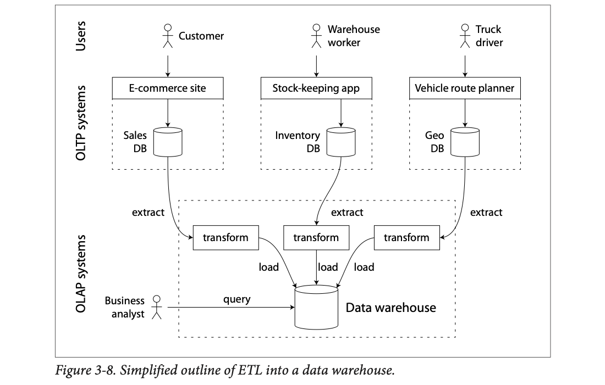
Top band (Users): a customer, a warehouse worker and a truck driver. Middle band (OLTP systems): each uses its own app and database: E-commerce site → Sales DB, Stock-keeping app → Inventory DB, Vehicle route planner → Geo DB. Bottom band (OLAP systems): arrows extract data out of each DB, each source gets its own transform box that reshapes and cleans its data, and load puts it into one data warehouse. The business analyst queries only the warehouse, never the OLTP databases.
Almost all large enterprises have data warehouses; small companies almost never do. Probably because small companies don't have many different OLTP systems, and their data is small enough to query in an ordinary SQL database or even a spreadsheet. In a large company, something simple in a small company takes a lot of heavy lifting.
A big advantage of a separate warehouse: it can be optimized for analytic access patterns. The indexing algorithms in the first half of the chapter work well for OLTP but are not very good at analytic queries. The rest of the chapter covers storage engines built for analytics.
A school with separate registers for fees, library, sports and exams. The principal doesn't wander into the fee counter during admission rush to ask for five-year trends. Instead, every night a clerk copies each register (extract), converts them to one common format, e.g. fixes "VII-B" vs "7B" (transform), and files them into one big archive room (load). The principal studies the archive. Where it breaks: the archive is a day old; ETL with streams can make it minutes old.
Separating the systems separates the load: heavy scans can't starve the checkout counter. It also separates the design: the warehouse can use a schema and storage layout (stars, columns) that would be terrible for OLTP writes but great for scans.
Night ETL for a retailer. Extract: dump yesterday's rows from the Sales DB (dates stored as "05/01/2024") and the Inventory DB (dates stored as "2024-01-05"). Transform: turn both into the same integer date_key format (the book's style, e.g. 140105), map product codes to product_sk, drop test orders, fix "Bengaluru" vs "Bangalore". Load: append the cleaned rows to the warehouse's fact table. Next morning an analyst queries the warehouse; checkout never slowed down.
A data warehouse's data model is usually relational, because SQL generally suits analytic queries. Many graphical analysis tools generate SQL, visualize results, and let analysts explore data with operations like drill-down and slicing and dicing.
On the surface a warehouse and a relational OLTP database look alike: both speak SQL. Inside they can look very different, because they're tuned for very different query patterns. Many vendors now focus on either transaction processing or analytics, not both.
A hospital with one reception desk (SQL) but two departments behind it: emergency (OLTP: fast, one patient at a time) and medical records research (OLAP: slow, thousands of files at once). Same front desk, completely different rooms and staff. Where it breaks: patients notice the difference in wait time; SQL users often don't notice which engine served them.
Since this early release, the list has changed: Shark became Spark SQL, Stinger was folded into Hive, Presto split into Presto and Trino, and cloud warehouses like Google BigQuery (built on Dremel) and Snowflake became common.
An analyst's BI tool sends SELECT region, SUM(amount) FROM sales GROUP BY region. In SQL Server or SAP HANA the same SQL text can be answered by the row-oriented OLTP engine (reading whole rows from B-tree pages) or by the analytic column engine (reading only the region and amount columns). The query looks identical; the work done inside is completely different. That is the "divergence" the book describes.
On a phone, swipe the diagram sideways. Press Next ▶. A tiny sales table (8 rows × 6 columns, modelled). Count how many values each engine has to touch.
Chapter 2 showed many data models for transaction processing. Analytics has much less variety: many warehouses use a formulaic style called a star schema (also called dimensional modeling [48]).
Figure 3-9 shows a grocery retailer's warehouse. In the centre is the fact table (fact_sales). Each row is an event at a particular time; here, one product bought by a customer. For website analytics a row might be a page view or a click.
Facts are usually stored as individual events, which gives maximum flexibility for later analysis. But the fact table gets huge: Apple, Walmart or eBay may have tens of petabytes of transaction history, mostly in fact tables [49].
Some fact-table columns are attributes, like the sale price and the supplier cost (so you can compute profit margin). Others are foreign keys to dimension tables. If a fact is an event, the dimensions are its who, what, where, when, how and why.
dim_product: one row per product type for sale, with its SKU (stock-keeping unit), description, brand, category, fat content, package size, etc. Each fact_sales row points at the product sold. (For simplicity, a customer buying several products at once becomes several fact rows.)dim_date), so extra facts about dates (like public holidays) can be stored, and queries can compare holiday and non-holiday sales.The name: draw the relationships and the fact table sits in the middle with foreign keys going out to dimension tables like the rays of a star.
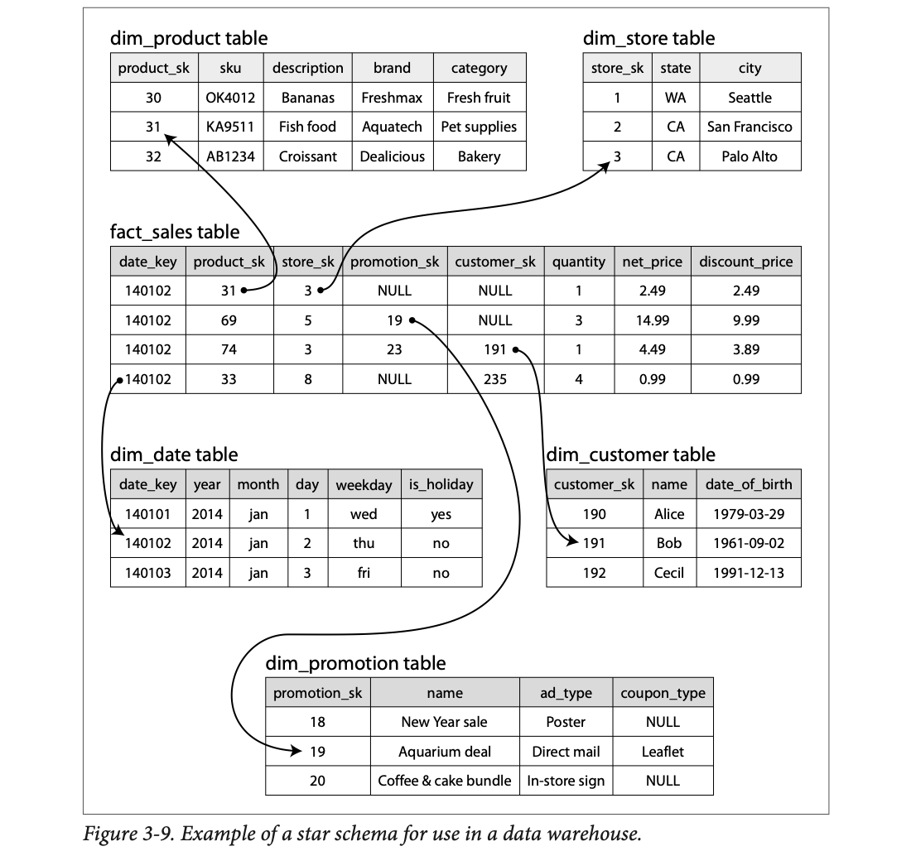
The middle table fact_sales has 4 sample rows. Follow the arrows from the first row: product_sk 31 → dim_product row 31 (Fish food, Aquatech, Pet supplies); store_sk 3 → dim_store row 3 (CA, Palo Alto). From the last row, date_key 140102 → dim_date (2014, jan, 2, thu, not a holiday). From the 3rd row, customer_sk 191 → Bob (born 1961-09-02). From the 2nd row, promotion_sk 19 → "Aquarium deal" by direct mail with a leaflet coupon. NULL means "none" (no promotion, or an anonymous customer). Note net_price vs discount_price (14.99 vs 9.99 in row 2).
A variation is the snowflake schema: dimensions are split further into sub-dimensions. For example separate tables for brands and product categories, with each dim_product row referencing them by foreign key instead of storing the names as strings. Snowflakes are more normalized, but stars are often preferred because analysts find them simpler [48].
Warehouse tables are often very wide: fact tables often have over 100 columns, sometimes several hundred [44]. Dimension tables can be wide too, holding all metadata that might matter for analysis. dim_store might include which services each store offers, whether it has an in-store bakery, its square footage, when it opened, when it was last remodelled, how far it is from the nearest highway, and so on.
A Swiggy order log is the fact table: each line says "dish 31, restaurant 3, customer 191, coupon 19, qty 1, ₹149". The dimension tables are the menus (what), restaurant list (where), customer list (who), coupon list (why it was cheap) and calendar (when, and was it Diwali?). Snowflake is when the restaurant list itself points to a separate "cuisines" list instead of writing "North Indian" on every row. Where it breaks: a real order has many dishes; the book stores one fact row per product.
Keeping descriptive text in small dimension tables keeps the gigantic fact table narrow-ish and made of small numbers (keys, quantities, prices), which compress well (plate 25). Analytic queries join the fact table to a few dimensions, filter on dimension attributes ("category = Fresh fruit") and sum fact attributes.
Read the first fact row as a sentence by following its rays: on Thu 2 Jan 2014 (date_key 140102, not a holiday), an anonymous customer (customer_sk NULL) bought 1 × Fish food by Aquatech (product_sk 31, Pet supplies) at the Palo Alto, CA store (store_sk 3), with no promotion, for $2.49. Row 2: 3 units of product 69 at store 5 under promotion 19 ("Aquarium deal", direct mail, leaflet coupon): net price 14.99, discount price 9.99. Every column is either a number to add up or a key pointing to a dimension.
With trillions of rows and petabytes in fact tables, storing and querying efficiently is hard. Dimension tables are usually much smaller (millions of rows), so this section focuses on storing facts.
Fact tables often have 100+ columns, but a typical warehouse query touches only 4 or 5 at a time (SELECT * is rarely needed in analytics) [44]. Example 3-1 reads a lot of rows (every purchase of fruit or candy in 2013) but only three fact_sales columns: date_key, product_sk and quantity.
-- Example 3-1: are people more inclined to buy fresh fruit or candy,
-- depending on the day of the week?
SELECT
dim_date.weekday, dim_product.category,
SUM(fact_sales.quantity) AS quantity_sold
FROM fact_sales
JOIN dim_date ON fact_sales.date_key = dim_date.date_key
JOIN dim_product ON fact_sales.product_sk = dim_product.product_sk
WHERE
dim_date.year = 2013 AND
dim_product.category IN ('Fresh fruit', 'Candy')
GROUP BY
dim_date.weekday, dim_product.category;How do we run this efficiently?
Most OLTP databases store data row-oriented: all values of one row sit next to each other. Document databases are similar: a whole document is one contiguous sequence of bytes (like the CSV lines in Figure 3-1).
You might have indexes on fact_sales.date_key and/or fact_sales.product_sk telling the engine where the sales for a date or product are. But a row store still has to load all those rows (each with 100+ attributes) from disk into memory, parse them, and filter out the ones that don't match. That can take a long time.
The idea of column-oriented storage is simple: don't store all values from one row together; store all values from each column together. If each column is in its own file, a query reads and parses only the columns it uses, which can save a lot of work.
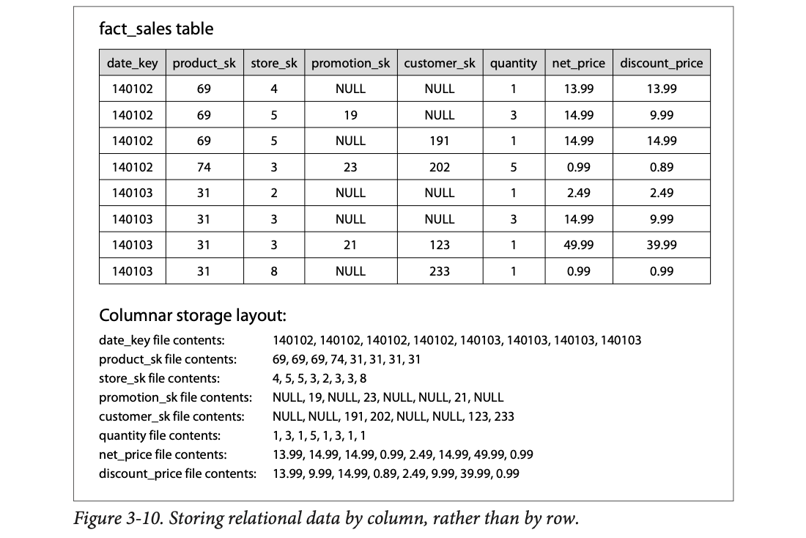
The top is the usual table view: 8 rows × 8 columns. The bottom shows what's actually on disk in a column store: one file per column. The date_key file holds the 8 date values in row order (140102 ×4, 140103 ×4); the product_sk file holds 69, 69, 69, 74, 31, 31, 31, 31; and so on. Row 5 of the table is the 5th value of every file: 140103, 31, 2, NULL, NULL, 1, 2.49, 2.49.
The layout depends on every column file holding the rows in the same order. To rebuild a whole row, take the 23rd entry from each column file and put them together: that's row 23.
Column storage is easiest to picture in the relational model, but it works for non-relational data too. Parquet [50] is a columnar storage format for a document data model, based on Google's Dremel [47].
Modelled: 1 billion rows, every column 8 bytes, no compression yet (plate 25 adds that).
A school with 1,000 students and a report card each (rows). The principal wants the average maths mark. Row-wise: pull out all 1,000 report cards and read just the maths line on each. Column-wise: the school keeps one sheet per subject with all 1,000 marks on it; take the maths sheet and add it up. Where it breaks: if a parent wants their child's full report card, the column school must visit every subject sheet, which is the column store's weakness for OLTP-style "give me this row".
Disks read in blocks. In a row layout, every block you read for quantity also carries 97 other columns you don't need. In a column layout, every byte in a quantity block is a quantity. Reading 3 of 100 columns means roughly 3% of the bytes.
1 billion rows × 100 columns × 8 bytes = 800 GB. Example 3-1 needs 3 columns: 24 GB from a column store vs 800 GB from a row store (without indexes). At 500 MB/s that's 48 seconds vs about 27 minutes.
Besides reading only the needed columns, we can cut disk throughput further by compressing. Column storage happens to compress very well: look at the column files in Figure 3-10, they're quite repetitive. Different data suits different techniques. One that works especially well in warehouses is bitmap encoding.
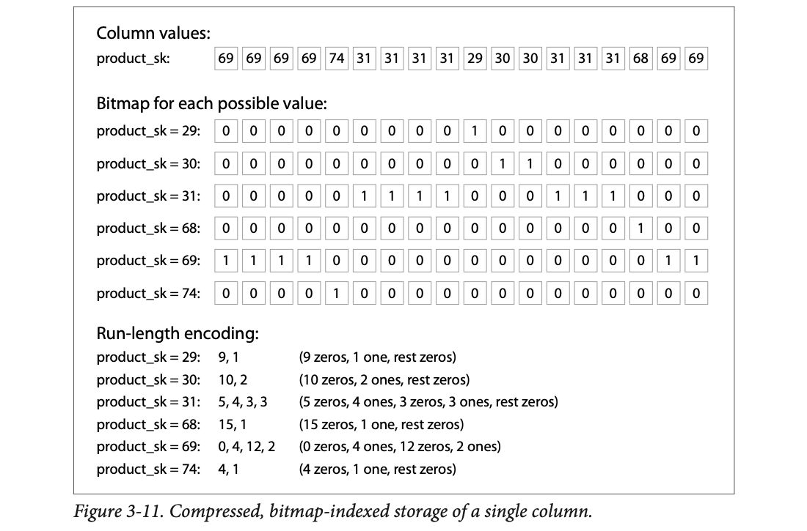
Top: the product_sk column for 18 rows: 69 69 69 69 74 31 31 31 31 29 30 30 31 31 31 68 69 69. Middle: one bitmap per distinct value. The bitmap for 31 has a 1 wherever the row's value is 31 (positions 6–9 and 13–15). Bottom: each bitmap written as run lengths, alternating zeros and ones. "5, 4, 3, 3" for 31 means 5 zeros, 4 ones, 3 zeros, 3 ones, rest zeros. For 69, "0, 4, 12, 2" starts with 0 zeros because the very first row is 69.
The number of distinct values in a column is often small compared to the number of rows (a retailer may have billions of sales but only 100,000 distinct products). Take a column with n distinct values and turn it into n bitmaps: one per distinct value, one bit per row. The bit is 1 if the row has that value, 0 if not.
country column has about 200 distinct values), store the bitmaps with one bit per row.Bitmap indexes like these suit typical warehouse queries very well:
WHERE product_sk IN (30, 68, 69): load the three bitmaps for 30, 68 and 69 and compute their bitwise OR, which is very fast.WHERE product_sk = 31 AND store_sk = 3: load the bitmaps for product_sk = 31 and store_sk = 3 and compute the bitwise AND. This works because all columns hold rows in the same order, so bit k in one column's bitmap is the same row as bit k in another's.Many other compression schemes exist for different data; see [51] for an overview.
The product_sk column is the book's (18 rows). The store_sk column used for AND is mine (modelled), since Figure 3-11 shows only one column.
A class attendance sheet: one row per student, one tick box per day. "Who was present on Monday or Tuesday?" = lay the two day columns side by side and mark anyone with at least one tick (OR). "Who was present on Monday and also in the cricket team?" = only rows ticked in both (AND). Run-length encoding is how a teacher would describe a long absence: "absent 14 days, present 3, absent 9" instead of 26 boxes. Where it breaks: a teacher reads ticks one by one; a CPU compares 64 bits in a single instruction.
One bitmap per value is wasteful when values are many, but most of those bitmaps are almost all zeros. Run-length encoding stores only where the ones are, so a sparse bitmap shrinks to a few numbers. Bitwise OR/AND on whole machine words handles 64 rows per CPU instruction, without looking at any row individually.
Figure 3-11, product_sk IN (30, 68, 69): OR of the three bitmaps gives 1s at rows 1–4, 11, 12, 16, 17, 18, i.e. 9 matching rows out of 18. Raw, the column is 18 values; the bitmap for 74 as RLE is just "4, 1".
For warehouse queries scanning millions of rows, a big bottleneck is the bandwidth from disk into memory. It's not the only one. Analytic database developers also worry about using CPU cycles well:
Column layouts help here too. The query engine can take a chunk of compressed column data that fits comfortably in the CPU's L1 cache and loop through it in a tight loop (no function calls). That's much faster than code with lots of function calls and conditions per record. Compression fits more rows of a column into the same L1 cache. Operators such as the bitwise AND and OR from plate 25 can work directly on these chunks of compressed data. This is vectorized processing [51, 42].
Counting votes. Row-at-a-time: an officer opens each ballot box, reads the form, checks the rules, writes in a register, goes to the next box: lots of steps per vote. Vectorized: a counting machine takes a whole tray of ballots at once and sorts them in one sweep. SIMD is a machine with 8 slots that checks 8 ballots per sweep. Where it breaks: ballots aren't compressed; columns are, so the tray holds even more.
The CPU is fastest when it does the same simple instruction over a contiguous array in its cache: the next data is predictable (prefetching works), branches are rare (no mispredictions), and SIMD units process several values per instruction. A column chunk is exactly such an array. A generic row-at-a-time engine calls a function per row per operator, which breaks all three.
A CPU's L1 data cache is roughly 32 KB. If product_sk is compressed to 1 byte per value, a 32 KB chunk holds 32,768 values, and a tight loop can test all of them against "= 31" without leaving the cache. If you instead process 800-byte rows, the same 32 KB holds only 40 rows, and the engine calls a function per row per operator. With SIMD, one instruction can compare 32 values at once (for example, 256-bit registers with 8-bit values).
In a column store the row order doesn't have to matter. The easiest is insertion order: a new row is just appended to every column file. But you can choose to impose an order, as with SSTables, and use it as an indexing mechanism.
You can't sort each column independently: then you'd no longer know which values belong to the same row. A row can only be rebuilt because the kth item of every column belongs to the same row. So data must be sorted a whole row at a time, even though it's stored by column.
The database administrator picks the sort columns based on common queries. If queries often target date ranges (like last month), make date_key the first sort key; the optimizer can then scan only last month's rows instead of all rows.
A second sort column orders rows that share the same first value. With date_key first in Figure 3-10, product_sk could be second, so all sales of one product on one day are grouped together. That helps queries that group or filter by product within a date range.
Sorting also helps compression. If the first sort column has few distinct values, after sorting it has long runs of the same value. Simple run-length encoding (as in Figure 3-11) can then shrink it to a few kilobytes, even with billions of rows.
The effect is strongest on the first sort key. The second and third are more jumbled, with shorter runs. Columns further down are in essentially random order, so they won't compress as well. Having the first few sorted is still a win overall.
Modelled data: 40 rows, 5 dates, 6 products, 4 stores. Run count = number of RLE pairs needed; fewer runs = better compression.
A stack of exam answer sheets sorted by class first, then by roll number. "Class" now comes in big blocks: "7A ×40, 7B ×38, 7C ×41", three lines describe the whole column. Roll numbers inside each class are in order but restart for every class, so they form shorter runs. The marks column is effectively random. Where it breaks: answer sheets can be physically reshuffled; a column store must keep every column file in the same shuffled order.
Sorting by (A, B) groups equal values of A into one contiguous run each, so A's run count equals its number of distinct values. B's runs are broken at every A boundary, so B has at most (distinct A × distinct B) runs. Later columns inherit no order at all. Range filters on A also become "read one contiguous slice", like an index.
1 billion sales rows over one year, sorted by date_key first. The date_key column becomes 365 runs: "140101 × 2.7 million, 140102 × 2.8 million …". Stored as 365 (value, count) pairs at about 12 bytes each, that is about 4 KB for a billion-row column, the "few kilobytes" the book mentions. A query for "last month" reads just 30 of those runs' row ranges. The second sort key (product_sk) restarts at every new date, so it has up to 365 × 100,000 runs: still compressed, but far less.
A clever extension came from C-Store and was adopted by the commercial warehouse Vertica [54, 55]. Different queries benefit from different sort orders, so why not store the same data sorted several ways? You need to replicate data to several machines anyway (so one failure doesn't lose it). You might as well sort each redundant copy differently, and pick the copy that best fits each query.
Multiple sort orders in a column store are a bit like multiple secondary indexes in a row store. The big difference: a row store keeps every row in one place (heap file or clustered index), and secondary indexes only hold pointers to the rows. In a column store there normally aren't any pointers: just columns of values.
Three photocopies of the same class register: the class teacher's copy sorted by roll number, the sports teacher's by house, the bus in-charge's by bus route. Each is complete (no "see the other register" pointers), each is fastest for its owner, and if one copy is lost the others still have everything. Where it breaks: when a new student joins, all three copies must be updated.
Replication already pays for extra copies; choosing a different sort for each costs nothing extra in storage. A secondary index is a thin pointer list that still needs the main copy; a differently sorted replica is a full, self-contained copy that can be scanned directly.
Query A: "total sales last week" → use the replica sorted by date first: last week is one contiguous slice. Query B: "all sales of product 31 ever" → use the replica sorted by product first: product 31 is one contiguous slice there, while in the date-sorted copy it is scattered across every day. Both replicas hold all the data, so if machine A dies, machine B can still answer query A (just more slowly).
On a phone, swipe the diagram sideways. Press Next ▶. The same 9 sales rows are stored on 3 machines, each copy sorted differently (modelled data). Highlighted cells are the rows a query must read.
These optimizations fit warehouses, where most of the load is large read-only queries by analysts. Columns, compression and sorting all speed up reads. The downside: they make writes harder.
Updating in place, like a B-tree, isn't possible with compressed columns. Inserting a row into the middle of a sorted table would most likely mean rewriting all the column files: rows are identified by their position in a column, so an insert must shift every column consistently.
Luckily the chapter already has a good answer: LSM-trees. All writes first go to an in-memory store, added to a sorted structure and prepared for disk. It doesn't matter if this in-memory store is row- or column-oriented. When enough writes have piled up, they're merged with the column files on disk and written to new files in bulk. This is essentially what Vertica does [55].
Queries must look at both the column data on disk and the recent writes in memory, and combine them. The query optimizer hides this: to an analyst, inserts, updates and deletes show up in the very next query.
A printed, bound yearly sales report can't have a line squeezed into the middle. So new sales go on a sticky-note pad at the front. Anyone reading the report also reads the sticky notes. When the pad is full, the office reprints the report with the notes merged in. Where it breaks: reprinting a book is slow and rare; merging columns happens routinely in the background.
The expensive operation (re-sorting and re-compressing a column) is done in bulk for many rows at once, so its cost per row is small. The read path does a merge of two sorted sources (disk columns + memory buffer), just like an LSM read checks the memtable plus SSTables.
The table in Figure 3-10 is sorted by date_key. A late sale for 140102 arrives. In place, it would belong at position 5, so every one of the 8 column files would need values shifted down by one (and re-compressed). Instead, the sale goes into the in-memory store. A SUM(quantity) query reads 16 from the column files plus the new sale's quantity from memory. Later, a background merge writes new sorted, compressed column files that include it. The sim above does exactly this.
Not every warehouse is a column store: traditional row-oriented databases and some other architectures are used too. But columnar storage can be much faster for ad-hoc analytic queries, so it's quickly gaining popularity [44, 56].
One more warehouse idea: materialized aggregates. Warehouse queries often use an aggregate function such as COUNT, SUM, AVG, MIN or MAX. If many queries use the same aggregates, crunching the raw data every time is wasteful. Why not cache the most-used counts or sums?
One such cache is a materialized view. In the relational model it's defined like a normal (virtual) view: a table-like object whose contents are the result of a query. The difference:
When the underlying data changes, a materialized view must be updated, because it's a denormalized copy. The database can do this automatically, but it makes writes more expensive, which is why materialized views are rare in OLTP databases. In read-heavy warehouses they make more sense (whether they actually help depends on the case).
A common special case is the data cube or OLAP cube [57]: a grid of aggregates grouped by different dimensions.
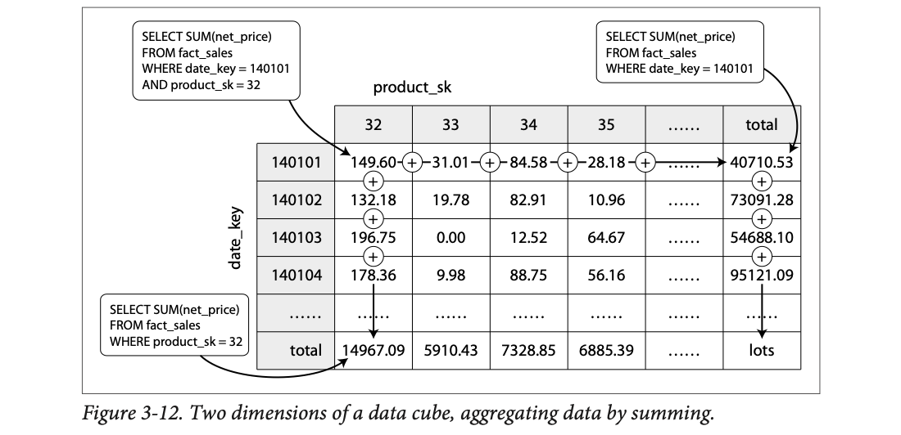
Rows are dates (140101 …), columns are products (32, 33, 34, 35 …). Each cell is SUM(net_price) for that date and product, e.g. 149.60 for date 140101 and product 32: that's the top-left SQL box. Adding along a row (the ⊕ signs) gives the "total" column: 40710.53 = all products on 140101 (top-right SQL). Adding down a column gives the "total" row: 14967.09 = product 32 on all dates (bottom-left SQL). The bottom-right corner, "lots", is the grand total.
Imagine each fact has foreign keys to only two dimensions, date and product. Draw a 2D table with dates on one axis and products on the other. Each cell holds the aggregate (e.g. SUM) of an attribute (e.g. net_price) for all facts with that date-product combination. Apply the same aggregate along a row or column, and you get a summary reduced by one dimension (sales by product regardless of date, or by date regardless of product).
Facts usually have more dimensions. Figure 3-9 has five: date, product, store, promotion and customer. A five-dimensional hypercube is hard to imagine, but the principle holds: each cell holds sales for one date-product-store-promotion-customer combination, and you can summarize repeatedly along each dimension.
So most warehouses keep as much raw data as possible and use aggregates like data cubes only as a performance boost for certain queries.
The 4×4 core values are the book's Figure 3-12 cells. Totals here are sums of only these 4 dates/products (the book's totals include the "……" rows and columns, so they're larger).
A cricket scorecard. The ball-by-ball log is the raw fact table. The scorecard (runs per batsman, per over, per bowler, with totals) is a data cube: "how many runs did Kohli score?" is instantly readable. But "how many runs came off balls faster than 140 km/h?" can't be answered from the scorecard, because ball speed isn't one of its dimensions; you need the ball-by-ball log. Where it breaks: a scorecard is updated by a human after each ball; a cube update is automatic but still costs work on every write.
A cube trades storage and write cost for read speed, like any index. It answers only questions whose filters and groupings are along its dimensions. Any filter on something that was summed away (like price) needs the raw rows again.
PostgreSQL has CREATE MATERIALIZED VIEW with manual REFRESH; SQL's GROUP BY CUBE(...) and ROLLUP(...) compute cube-style totals on the fly.
"Total sales of product 32?" Without a cube you scan every fact row for product 32. With the cube you read one cell of the total row: 14967.09. "Total sales on 140101?" One cell of the total column: 40710.53. Size (modelled): 365 dates × 100,000 products = 36.5 million cells, far fewer than billions of fact rows. But "share of sales from items over $100" needs the raw rows, because price was summed away.
The chapter asked: what happens when you store data in a database, and what does it do when you query it later?
At a high level, storage engines fall into two groups: those built for transaction processing (OLTP) and those built for analytics. Their access patterns differ a lot:
On the OLTP side there are two main schools:
Log-structured engines are fairly recent. Their key idea: systematically turn random-access writes into sequential writes, which gives higher write throughput given how hard drives and SSDs perform.
The OLTP side ended with a quick tour of more complex indexes and of databases that keep everything in memory.
Then a detour to the high-level architecture of a typical data warehouse. That showed why analytics is so different from OLTP: when queries scan a large number of rows sequentially, indexes matter much less. What matters is encoding data very compactly to minimize how much a query reads from disk. Column-oriented storage helps with exactly that.
As a developer, knowing these internals puts you in a much better position to choose the right tool. When you tune a database's parameters, you can imagine what a higher or lower value will do. The chapter can't make you an expert in tuning any one engine, but it gives you enough vocabulary and ideas to make sense of your database's documentation.
| Term | Meaning in one line |
|---|---|
| Log | An append-only sequence of records (not necessarily human-readable). |
| Index | Extra structure derived from the data that speeds reads and slows writes. |
| Hash index | In-memory hash map: key → byte offset in a data file (Bitcask). |
| Segment | One closed chunk of the log file; immutable once written. |
| Compaction | Drop duplicate keys from a log, keeping only the latest value per key. |
| Tombstone | A special record that marks a key as deleted. |
| SSTable | Sorted String Table: a segment sorted by key, each key once. |
| Sparse index | In-memory index of only some keys (one per few kB), enough because the file is sorted. |
| Memtable | In-memory balanced tree that collects writes before they're flushed as an SSTable. |
| LSM-tree | Log-Structured Merge-Tree: memtable + cascade of SSTables merged in the background. |
| Bloom filter | Small bit array that says "definitely not present" or "maybe present". |
| Postings list | In full-text search, the list of document IDs containing a term. |
| B-tree | Tree of fixed-size pages (≈4 kB) sorted by key, updated in place, O(log n) height. |
| Branching factor | Number of child references in one B-tree page (often hundreds). |
| Leaf page | Bottom B-tree page holding keys with values (or references to values). |
| Write-ahead log (WAL) / redo log | Append-only file every change is written to before it's applied, for crash recovery. |
| Latch | A lightweight lock protecting in-memory/tree data structures from concurrent threads. |
| Write amplification | One database write causing several writes to disk. |
| Copy-on-write | Write a changed page to a new place and create new parents (LMDB). |
| B+ tree | Common B-tree variant with abbreviated keys in interior pages. |
| Primary / secondary index | Index on the unique ID vs on another, possibly non-unique, column. |
| Heap file | Unordered file where rows live; indexes point into it. |
| Clustered index | Index that stores the whole row inside it (InnoDB primary key). |
| Covering index | Index that stores some extra columns so it alone can answer a query. |
| Concatenated index | Several columns joined into one key, e.g. (lastname, firstname). |
| R-tree | Spatial index for multi-dimensional range queries (PostGIS). |
| Edit distance | Number of single-letter additions, removals or replacements between two words. |
| Sequential vs random write | Writing to the next spot on disk vs jumping to scattered spots; sequential is much faster on HDDs and SSDs. |
| Orphan page | A B-tree page that no parent points to, left by a crash in the middle of a split. |
| Forwarding pointer | A note left at a row's old heap location pointing to where the row moved. |
| Fractal tree | A B-tree variant that borrows log-structured ideas to reduce disk seeks. |
| Space-filling curve | A way to turn a 2D point into one number so a normal B-tree can index it. |
| Fuzzy query / Levenshtein automaton | Search for similar keys (e.g. typos); Lucene's automaton finds words within an edit distance. |
| Business intelligence | Reports built from analytic queries to help management decide. |
| Drill-down / slicing and dicing | Analyst operations: zoom into detail, or cut the data by different dimensions. |
| SIMD | Single-instruction-multi-data: one CPU instruction working on several values at once. |
| Virtual view | A saved query; reading it runs the underlying query on the fly (unlike a materialized view). |
| Anti-caching | In-memory DB evicts least-recently-used records to disk and loads them back on access. |
| OLTP | Online transaction processing: many small, low-latency reads/writes by key. |
| OLAP | Online analytic processing: few big queries that scan and aggregate many rows. |
| Data warehouse | Separate read-only analytics database copied from OLTP systems. |
| ETL | Extract–Transform–Load: how data gets into a warehouse. |
| Star / snowflake schema | Fact table surrounded by dimension tables / with dimensions split further. |
| Fact table / dimension table | Events (one row each) / the who, what, where, when, how, why of the events. |
| Column-oriented storage | Each column stored in its own file, rows in the same order everywhere. |
| Bitmap encoding | One bit array per distinct value; 1 where the row has that value. |
| Run-length encoding | Store runs as counts ("5 zeros, 4 ones …"). |
| Vectorized processing | Operators that loop over compressed column chunks in the CPU cache. |
| Materialized view | A stored copy of a query's results, updated when data changes. |
| Data cube / OLAP cube | Grid of pre-computed aggregates grouped by several dimensions. |
| System | What it does with the idea (per the book) |
|---|---|
| Bitcask (Riak default) | Log-structured hash index; all keys in RAM; hash-map snapshots for fast recovery; checksums. |
| LevelDB, RocksDB | Embeddable LSM key-value engines (memtable + SSTables); LevelDB adds Bloom filters; LevelDB usable in Riak. |
| Cassandra, HBase | LSM-style storage inspired by Google's Bigtable (which coined SSTable and memtable). |
| Lucene, Elasticsearch, Solr | Term → postings list in SSTable-like files, merged in background; FST index; fuzzy search via Levenshtein automata. |
| Relational databases (generally) | B-tree indexes, WAL, latches, range locks for isolation. |
| LMDB | Copy-on-write B-tree instead of WAL. |
| MySQL InnoDB | Primary key is a clustered index; secondary indexes refer to the primary key. |
| SQL Server | One clustered index per table; also both OLTP and warehouse engines behind one SQL. |
| PostGIS / PostgreSQL GiST | R-tree geospatial indexes. |
| HyperDex | Multi-dimensional indexing (e.g. date × temperature). |
| Memcached | In-memory cache; data loss on restart is acceptable. |
| VoltDB, MemSQL, Oracle TimesTen | Relational in-memory databases. |
| RAMCloud | Durable in-memory key-value store, log-structured in memory and on disk. |
| Redis, Couchbase | In-memory with weak durability (asynchronous disk writes); Redis exposes queues and sets. |
| SAP HANA | OLTP + warehousing in one product (increasingly separate engines). |
| Teradata, Vertica, ParAccel, Amazon Redshift | Commercial data warehouses; Redshift is hosted ParAccel; Vertica (from C-Store) uses multiple sort orders and LSM-style writes. |
| Hive, Shark, Impala, Stinger, Presto, Tajo, Drill | Open-source SQL-on-Hadoop warehouses; some based on Google's Dremel. |
| Parquet | Columnar storage format for document data, based on Dremel. |
EXPLAIN shows "Index Only Scan" for covering indexes.db_set fast but db_get slow, and what's the Big-O of db_get?Appending is the simplest, sequential write. db_get scans the whole file because the latest value could be anywhere: O(n) (plate 2).
Well-chosen indexes speed up reads, but every index slows down writes, so you choose them by hand from your query patterns (plate 3).
Many writes per key but few distinct keys, so all keys fit in the in-memory hash map (plate 4).
Append a tombstone record; when segments are merged, the tombstone makes the merger discard earlier values (plate 6).
The hash table must fit in memory, and range queries are inefficient (plate 7). SSTables allow a sparse index and are sorted, so ranges are a scan.
The one from the more recent segment, because each segment covers a time period and adjacent segments are merged (plate 8).
Writes still in the memtable (not yet flushed to an SSTable) are lost. The WAL exists only to rebuild the memtable (plate 9).
"Maybe": check that segment on disk (could be a false positive). "No": skip the segment, the key is definitely not there (plate 10).
The page splits into two half-full pages and the parent is updated with a new boundary: at least three page writes, plus the WAL record first (plates 11–12).
A page no parent points to, left by a crash midway through a multi-page split. The write-ahead log lets recovery finish or redo the split (plate 12).
Background compaction competes for limited disk bandwidth, so some requests wait (plate 14).
Finding everyone with a given first name (plate 17).
They avoid the overhead of encoding in-memory data structures in a form that can be written to disk; the OS cache would remove disk reads anyway (plate 19).
It reads only the 3 column files. Rows are rebuilt by position (kth entry of each column), so all columns must share one row order (plates 24, 27).
product_sk = 31 AND store_sk = 3 using bitmaps. Why does AND work?Bitwise AND of the two bitmaps. It works because every column stores rows in the same order, so bit k is the same row in both (plate 25).
Anything filtering on something that isn't a dimension, e.g. the share of sales from items over $100 when price isn't a dimension (plate 30).